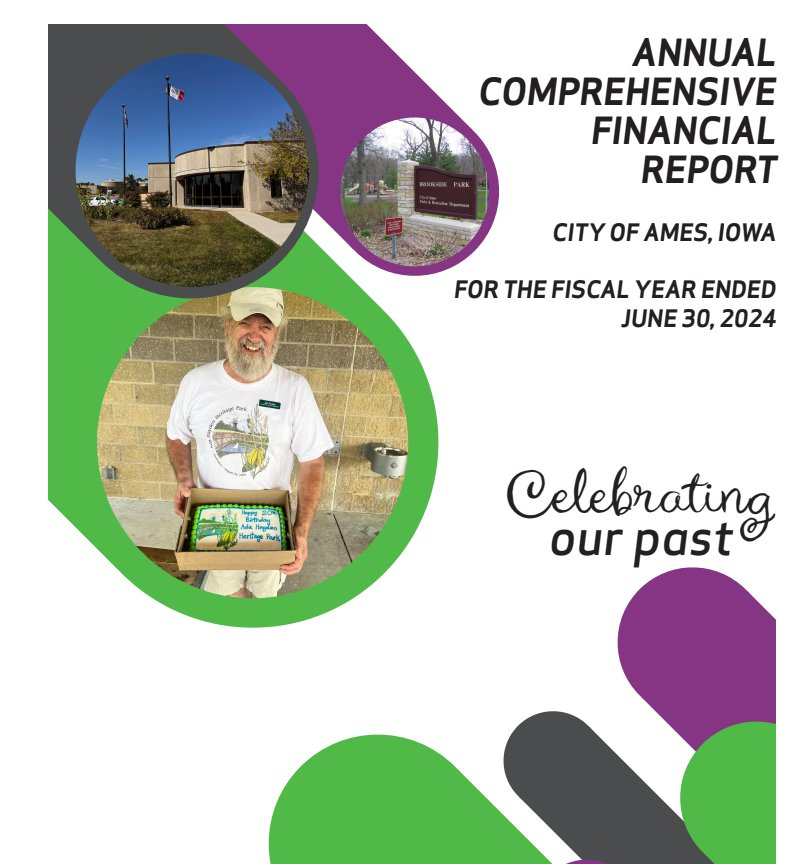
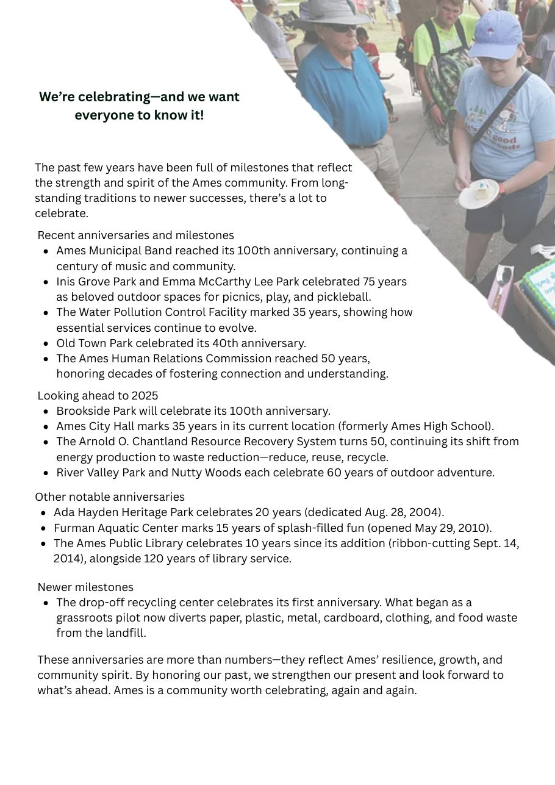
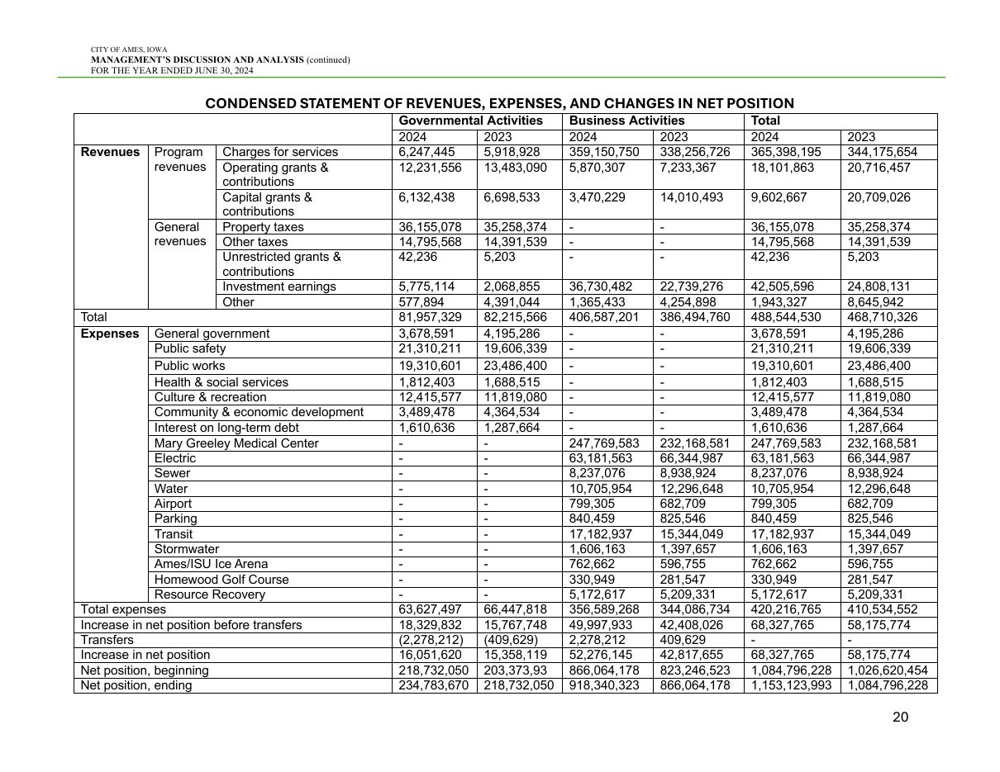
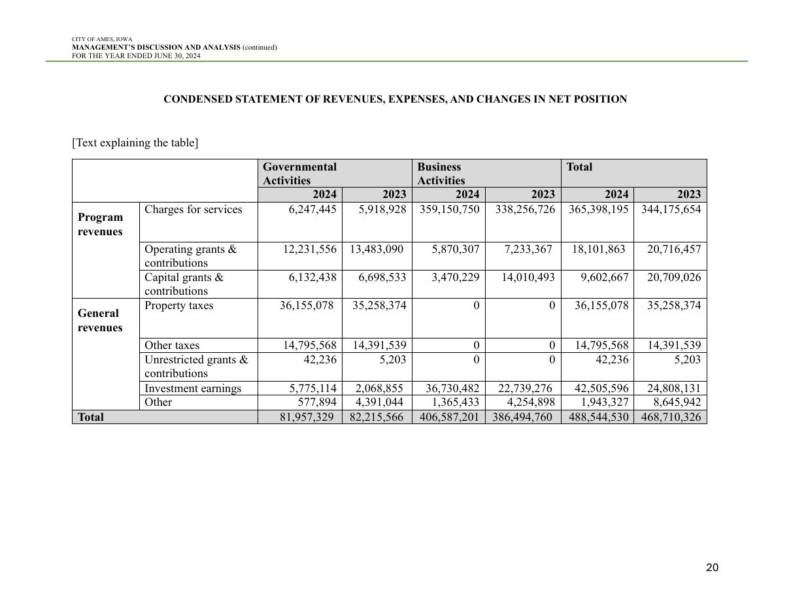
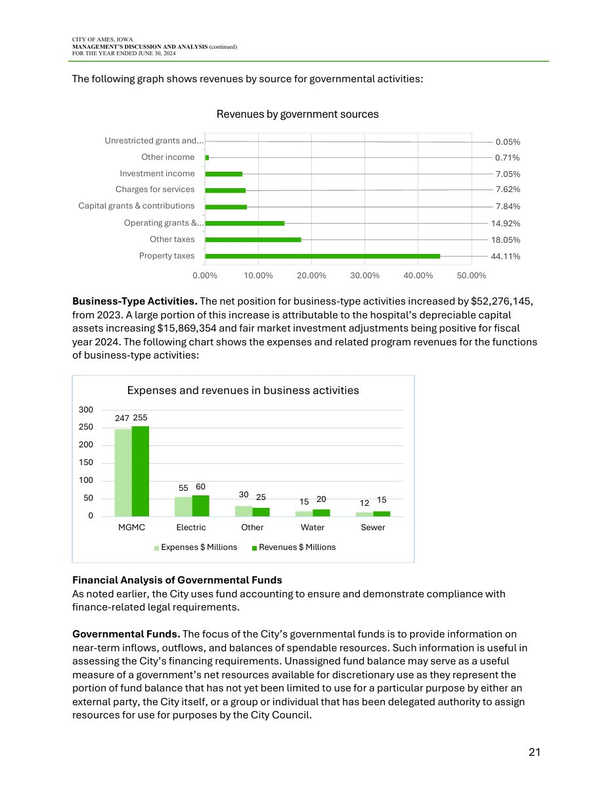
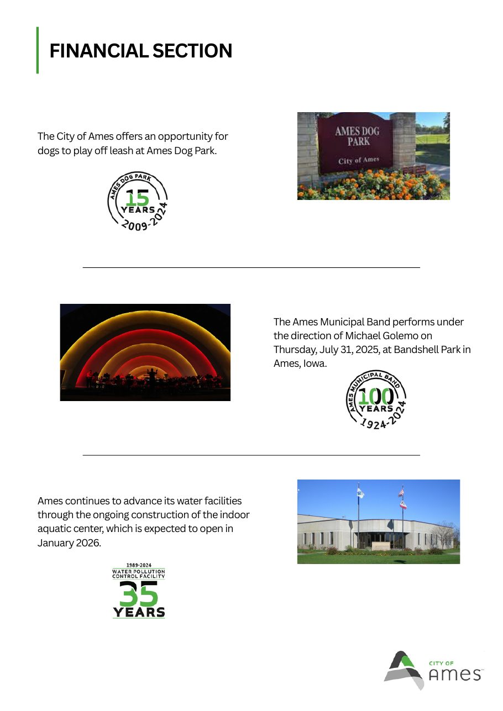

Redesigning the City of Ames annual report
Two redesigns of selected sections of a 175-page municipal financial report, focused on making the financial tables and charts easier to read.
- Context
- PhD coursework, Iowa State, 2026
- My role
- Individual project: redesigned selected sections in two versions
- Source
- City of Ames Annual Comprehensive Financial Report, fiscal year 2024
- Deliverables
- Two redesigned versions
The brief
The City of Ames publishes a 175-page Annual Comprehensive Financial Report. I redesigned selected sections, including the cover, the opening letter, a photo-led introduction to the financial section, and the statement of revenues, expenses and changes in net position with its charts.





Two ways to present the numbers
The financial statement is the hardest part of the report for non-specialists. I tried two approaches.
- Version 1 keeps the statement as one condensed table and follows it with charts of revenue sources and business-type activities.
- Version 2 splits the long statement into smaller tables, each with space for a short plain-language explanation, so readers get the numbers in pieces with context.







